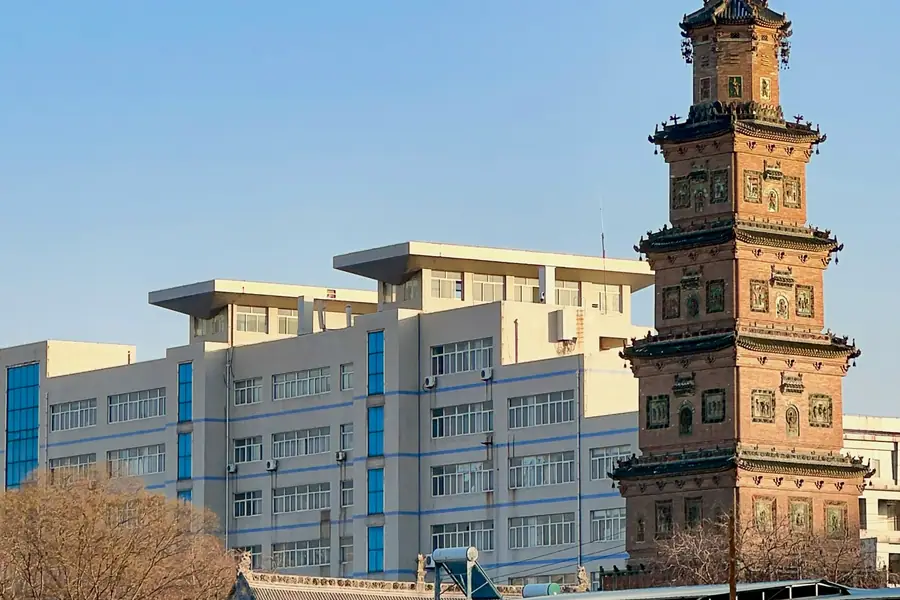
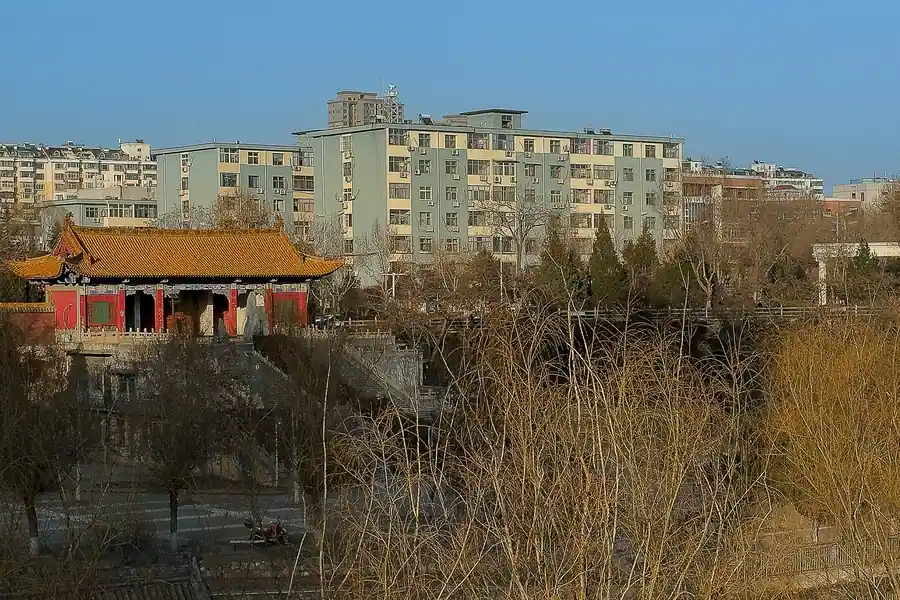

Linfen Airport Transfer & Private Car
Linfen Yaodu Airport (LFY) to Yellow River Hukou waterfall, Da Huashu ancestral hometown, and Emperor Yao birthplace with licensed professional driver. Shanxi cradle of Chinese civilization. Fixed price.
Linfen in Pictures
Real scenes from Linfen — landmarks, streets and everyday life.


Linfen at a Glance
Ancient capital of Emperor Yao — cradle of Chinese civilization on the Yellow River. Shanxi southern gateway.
Name Origin
The name "Linfen" (临汾) means "Near the Fen River" (临, near; 汾, the Fen River). The city is located at the confluence of the Fen River (汾河) and the Yellow River (黄河). Linfen is historically significant as the legendary birthplace of Emperor Yao (尧帝), one of the legendary sage kings who founded the legendary Tang Dynasty, making Linfen one of the cradles of Chinese civilization.
Education & Culture
Linfen is a center of Shanxi culture and ancestral heritage. Shanxi Normal University (山西师范大学) is located in Linfen. The city has strong connections to the global Chinese diaspora through the Da Huashu heritage — millions of Chinese people trace their ancestry to families who migrated from this area during the Ming and Qing dynasties.
Transportation
Linfen has its own airport — Linfen Yaodu Airport (LFY), located about 8 km east of the city center. LFY serves domestic flights to Beijing, Shanghai, Guangzhou, Chengdu, and other major cities. Linfen is also served by Linfen Railway Station (临汾站) and Linfen West Railway Station (临汾西站) on the Linfen-Taiyuan HSR corridor. Our private car meets you at the airport or station.
Natural Environment
Linfen is located in southern Shanxi Province at the junction of the Loess Plateau and the North China Plain. The Fen River valley is fertile agricultural land surrounded by mountains. The climate is temperate continental — hot summers and cold, dry winters.
Maps & Transit
Best Time to Visit Linfen
The climate record of Linfen decides when the city is at its most comfortable to walk.
The annual average temperature is 13.1 °C; annual rainfall averages 455 mm; July is the hottest month at 26.6 °C; January the coldest at -2 °C; The climate pattern includes The monsoon, drought, highland conditions.
Spring
Monthly means in March, April, May run 8–20 °C. Rainfall over those three months totals about 80 mm.
Summer
Monthly means in June, July, August run 25–27 °C. Rainfall over those three months totals about 249 mm.
Autumn
Monthly means in September, October, November run 5–20 °C. Rainfall over those three months totals about 113 mm.
Winter
Monthly means in December, January, February run -2–2 °C. Rainfall over those three months totals about 13 mm.
Top Linfen Attractions
From Emperor Yao capital to Yellow River waterfalls — discover the cradle of Chinese civilization.
Popular Linfen Routes
Fixed-price private car service for Linfen most popular journeys.
🌲 LFY Airport - Linfen City Center
From ¥197($27.75)~8 km - 20 minutes - Economy/Business/MPV
Linfen Yaodu Airport (LFY) is only 8 km from the city center. Your driver meets you at the arrival hall and drives you directly to your hotel. Door-to-door comfort.
🌊 Hukou Waterfall Day Trip
From ¥197($27.75)~150 km - 2.5 hours each way - Full day
Visit the Shanxi side of Hukou Waterfall (壶口瀑布) where the Yellow River dramatically narrows through the gorge. Your driver takes you directly to the Shanxi entrance and waits while you explore.
🛕 Da Huashu + Yao Temple Day Tour
From ¥197($27.75)Half to full day - City tour - Business vehicle
Visit the Da Huashu ancestral hall and Yao Temple in one day. Particularly meaningful for visitors of Chinese descent exploring their ancestral roots.
⛰️ Xinghua Village Ancient City Trip
From ¥197($27.75)~50 km - 1 hour each way - Half day
Visit the well-preserved Ming Dynasty Xinghua Village ancient town with original city walls, gates, and traditional courtyard houses. Combine with a traditional vinegar workshop.
Transparent Pricing in Linfen
Published rates, no estimate games. Check the numbers yourself before you book — and the price you see is the price your driver is paid from.
Fixed Price List — 临汾 (Linfen)
Published rates from our 2026 quote sheet. Renminbi first, USD for reference at 1 USD = ¥7.10. Every price below already includes tolls, parking, driver service and free airport waiting time (up to 60 minutes after your flight lands) — nothing is added on the day.
🛬 Airport & Intercity Transfer
One flat fare for airport pickup, drop-off or city-to-city — intercity costs the same as the airport run. 35 km and 60 minutes included; beyond that we charge by the minute and the kilometre at the rates shown.
| Vehicle | Seats | Bags | Fixed fare | USD | Beyond 35 km / 60 min |
|---|---|---|---|---|---|
| 4-seat Economy Sedan | 4 | 2 | ¥197 | ≈ $27.75 | ¥0.99/min · ¥4.42/km |
| 4-seat Comfort Sedan | 4 | 2 | ¥281 | ≈ $39.58 | ¥1.1/min · ¥4.89/km |
| 6-seat Business Van | 6 | 3 | ¥346 | ≈ $48.73 | ¥1.17/min · ¥5.2/km |
| 8-11-seat Business Van | 11 | 4 | ¥593 | ≈ $83.52 | ¥1.52/min · ¥6.76/km |
| 12-18-seat Minibus | 18 | 4 | ¥686 | ≈ $96.62 | ¥1.7/min · ¥7.54/km |
| 19-55-seat Coach Bus | 55 | 5 | ¥718 | ≈ $101.13 | ¥1.93/min · ¥8.58/km |
🚗 Hourly Private Charter
Book the car and the hours, keep the car for the day. Unused kilometres can be carried into the next tier, so a long day never turns into a penalty. The driver stays with you — you set the stops.
| Vehicle | 2h / 35km | 4h / 50km | 6h / 75km | 8h / 100km | 10h / 125km |
|---|---|---|---|---|---|
| 4-seat Private Car | ¥234 | ¥377 | ¥494 | ¥572 | ¥598 |
| 6-seat Business Van | ¥299 | ¥494 | ¥637 | ¥741 | ¥780 |
| 8-11-seat Business Van | ¥431 | ¥711 | ¥917 | ¥1067 | ¥1123 |
| 12-18-seat Minibus | ¥517 | ¥854 | ¥1101 | ¥1280 | ¥1348 |
| 19-55-seat Coach Bus | ¥620 | ¥1024 | ¥1321 | ¥1537 | ¥1617 |
Why travellers book Linfen with Chinawheely
Six things you get with every booking — in Linfen and across all 346 cities on the platform.
Licensed travel agency, not a ride-hail app
Chinawheely is a registered travel agency (L-HUB-101603). Your booking is a travel contract with a licensed operator — not a broker handing your number to whoever answers the phone.
One locked price, shown before you pay
The price you see is the price you pay. Tolls, parking, driver service and airport waiting time are already inside it. No surge pricing, no meter, no cash-on-the-day surprise.
Flight tracked, waiting time on us
We watch your flight number in real time. If it lands late or is delayed, your driver shifts with it and the waiting time stays on us — not on your bill.
A licensed driver who knows the city
Every car is driven by a professional local driver who knows the routes, the shortcuts and the parking that actually works near the attractions — with English communication and a name board on arrival.
Free changes up to 48 hours before
Plans move. Reschedule or cancel any booking free of charge up to 48 hours before your scheduled pickup, straight from your confirmation link.
A real human on WhatsApp, 8AM–12AM Beijing time
One message reaches a person who can re-price, re-route or re-plan your trip on the spot. No ticket queue, no chatbot loop.
Book Linfen at the published price
Pick your vehicle, see the fare line by line, and pay by PayPal or Alipay. Free changes up to 48 hours before pickup — or ask on WhatsApp and we will hold a car for you.
The quote is valid for 48 hours, and you can change or cancel free up to 48 hours before pickup.
Getting to Linfen: Airport & Railway Stations
Linfen has its own airport. Here is how to arrive in Linfen.
Airport
🌲 Linfen Yaodu Airport (LFY)
8 km east of city center - 20 minutes by road
LFY is Linfen city airport, serving domestic flights to Beijing, Shanghai, Guangzhou, Chengdu, and other major cities. The airport is located just 8 km from the city center. Our driver meets you at the arrival hall.
🏯 Airport Tips
What to know before you land
LFY is a regional airport with limited facilities. Wi-Fi is available in the terminal. For international travelers connecting domestically, flights via Beijing or Shanghai are the most common routes.
Railway Stations
🌲 Linfen West Railway Station (临汾西站)
High-speed hub - Western district
The main high-speed rail station on the Linfen-Taiyuan HSR corridor. From here, Taiyuan is 1.5 hours by HSR and Beijing is about 4 hours. The station is about 10 km from the city center.
🌲 Linfen Railway Station (临汾站)
Central station - Near city center
Located near the city center, serving conventional and some high-speed trains. Convenient for central Linfen destinations. Private car pickup recommended.
🗼 Need a Station Pickup?
We meet you at the exit with a name board and help with luggage.
Book Station TransferLinfen Best Photo Spots
Capture the cradle of Chinese civilization from its most scenic angles.
🌊 Hukou Waterfall Thunder
Best in summer
The Yellow River thunders through the 30-meter-wide gorge at Hukou, creating spray and mist visible from hundreds of meters away. Most dramatic in summer after the rainy season.
🌊 Da Huashu Ancient Locust Tree
Best in morning
The ancient locust tree at Da Huashu, believed to be over 1,000 years old, is a powerful symbol of ancestral roots. Most atmospheric in the early morning when worshippers light incense.
🛕 Yao Temple Pagoda at Dusk
Best at sunset
The towering pagoda at Yao Temple is silhouetted beautifully against the evening sky. The temple grounds with prayer flags and ancient stone inscriptions create a contemplative atmosphere.
⛰️ Xinghua Village City Walls
Best in morning
The preserved Ming Dynasty city walls of Xinghua Village are at their most photogenic in the morning light. The traditional tiled rooftops and ancient gates create a timeless scene.
🌊 Fen River Waterfront at Dusk
Best at sunset
The Fen River waterfront with its willow trees and modern greenway is beautifully lit at dusk. The city skyline and surrounding mountains make for a pleasant urban landscape photo.
🍵 Loess Plateau Overlook
Best in morning
The roads between Linfen and Hukou Waterfall pass through dramatic Loess Plateau terrain. Stop at overlooks along the way for sweeping plateau landscape photos.
Food & Shopping in Linfen
Must-Try Linfen & Shanxi Cuisine
Shanxi Aged Vinegar (山西老陈醋)
Shanxi is famous for its aged vinegar (老陈醋) — one of China four famous vinegars. Linfen area produces excellent Xinghua vinegar using traditional methods. Try the dipping vinegar with dumplings. Your driver can take you to a traditional vinegar workshop.
Dao Xiao Noodles (刀削面)
Shanxi is famous for its knife-cut noodles (刀削面) — the chef slices portions of dough directly into boiling water with a large knife. Served in a savory lamb or tomato broth. A warming Shanxi staple.
Yangrou Paomo (羊肉泡馍)
Lamb broth poured over torn flatbread (paomo), served with lamb meat and pickled vegetables. A hearty northwestern specialty. Popular at Muslim restaurants throughout Linfen.
Mahua Fried Dough Twists (麻花)
Crispy fried dough twists (麻花, mahua) are a traditional Shanxi snack. The Linfen variety is particularly flaky and lightly sweetened. Available at traditional bakeries and markets throughout the city.
Shopping Destinations
Wenming Road Commercial District
Linfen main commercial street with department stores, local boutiques, and specialty food shops.
Linfen Night Market
The evening food market near the city center comes alive at night with street food stalls, souvenir vendors, and local crafts. A great place to experience local life.
What to Buy in Linfen
Xinghua Vinegar
Traditional Shanxi aged vinegar produced in the Linfen area. Available at specialty food shops and the Xinghua Village workshop. A unique and practical souvenir.
Shanxi Coal Art Carvings
Artisans carve decorative objects from coal — small carved animals, landscapes, and ornaments make unusual and distinctive souvenirs.
Ancestor-Seeking Souvenirs at Da Huashu
The Da Huashu heritage site has gift shops selling ancestor-seeking memorabilia — miniature locust trees, family tree charts, and genealogical calligraphy scrolls.
Medical History & TCM Heritage of Linfen
Discover the traditional medicine heritage of Emperor Yao birthplace and the Yellow River region.
Emperor Yao and Early Medicine
The legendary origins of Chinese medicine. Emperor Yao (尧帝), the legendary sage king born in the Linfen area around 4,000 years ago, is traditionally credited with establishing early medical practices. According to legend, Yao created the first medical system to care for his people, laying the cultural foundation for Traditional Chinese Medicine.
The Yao Temple in Linfen preserves artifacts and records of these legendary early practices.
Shanxi Yellow River Herbal Medicine
Loess Plateau pharmacy. The Loess Plateau and Yellow River valley around Linfen are home to unique medicinal herbs. Astragalus (黄芪) and salvia (丹参) from the Linfen area are highly regarded in TCM for their quality.
Available at TCM pharmacies in Linfen and at the Linfen Traditional Medicine Market.
Ancestor Worship and Health Rituals
Worship for wellness. The strong ancestor worship tradition in Linfen (home of the Da Huashu migration heritage) is intertwined with traditional health beliefs. Families believe that honoring ancestors (祭祀) brings health and good fortune. The rituals at Yao Temple and Da Huashu reflect this ancient connection between ancestral worship and wellbeing.
Shanxi Vinegar Therapy
Ancient vinegar health traditions. Shanxi aged vinegar (山西老陈醋) has been used for its medicinal properties for over 3,000 years. Traditional belief holds that daily consumption of aged vinegar aids digestion, lowers blood pressure, and promotes longevity. Modern science has confirmed the health benefits of acetic acid and amino acids in aged vinegar.
Visit the Xinghua vinegar workshop near Xinghua Village to learn about the traditional fermentation process.
More China destinations
Compare routes, published prices and local driver tips across the cities we cover.